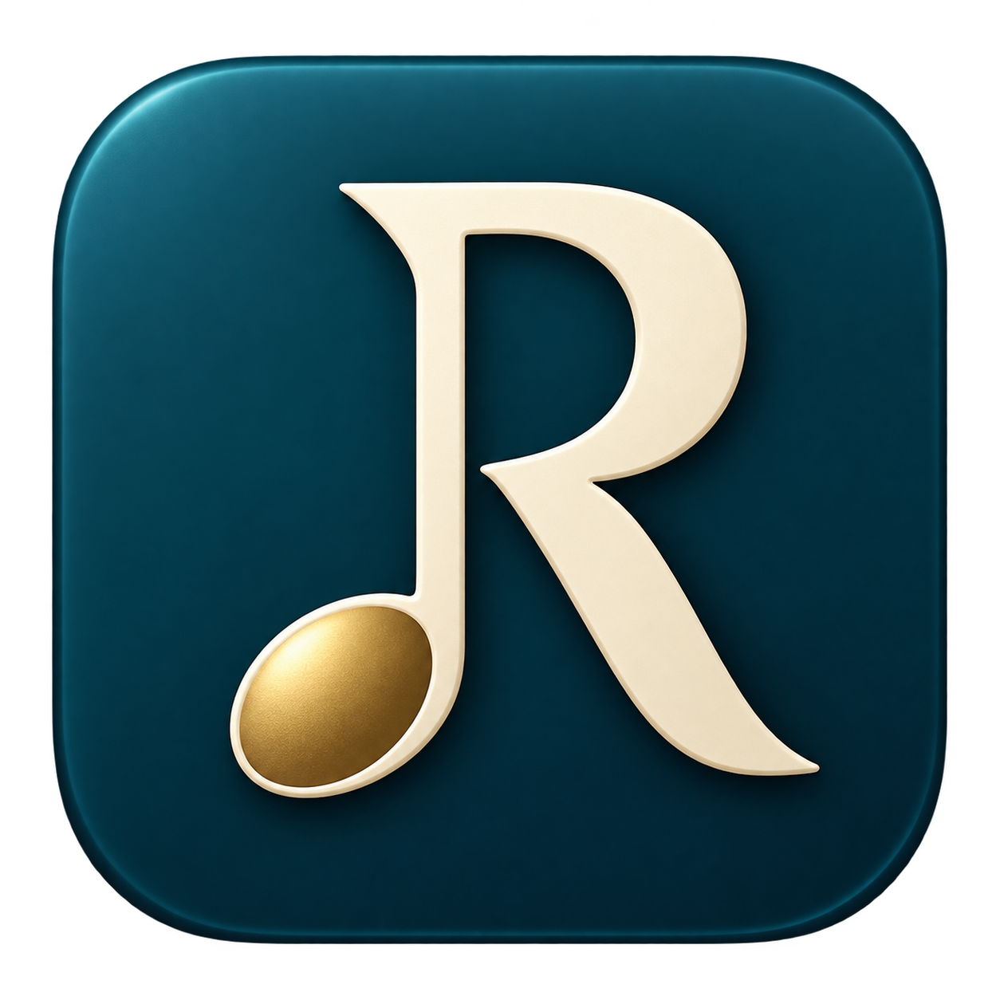

Rick Music
ESTUDIO DE NOTACIÓN
? Ayuda
Nuevo
Abrir
Guardar
↶ Deshacer
↷
MUSX ↓
MusicXML ↓
MIDI ↓
MP3 ↓
Imprimir / PDF
▶ Reproducir
■
♩ =
♩ Clic
☷ Herramientas
☰ Documento
⊡ Ajustar
CAPA
1
2
3
4
Cancelar MP3
● Finalizar grabación
Capa 1 · voz independiente
Mostrar todas
Convertir grupo…
DURACIÓN
Redonda
Blanca
♩
♪
♬
•
♯
♭
♮
3
Tresillo 3:2
Quintillo 5:4
Septillo 7:4
⌒ Ligadura
Octava
Ajustar ancho
35%
50%
65%
80%
100%
125%
Teclado de entrada
Toca para insertar · A–G para escribir
＋ Acorde